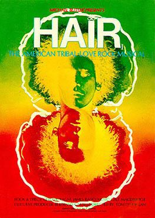

Guy Taylor's Biography
Guy Taylor was the treasurer of the Metropolitan Amateur Operatic Society, the group that first produced Hair pre-Genesis Theatre.

I was introduced to Rob Bromley by Pete Barton one evening in the spring of 1975 in the Garrick pub in Flixton. Rob and Pete were two years below me at Urmston Grammar School and although I knew Pete I didn’t know Rob. That was soon to change.
Rob was a member of Urmston Operatic Society but the parts and the shows weren’t really suited for someone in their early twenties. He had seen that the show HAIR was available and had written to the rights owners EVANS who gave him permission to stage it as a Northern Premiere. He wanted us to be regional so called the company ‘Metropolitan Amateur Operatic Society’.
I was seduced over a few pints in the Garrick into becoming treasurer because I worked in a bank and Pete was chosen by Rob as secretary because he and Rob were close friends at college. We were young and although we probably thought it was ‘pie in the sky’ we decided to give it a go, and so the adventure began.
We contacted NODA (National Operatic and Dramatic Association) and became members. A gentleman called Brian Thorpe was very helpful and provided me with draft rules which I used to draw up our own rules. The annual subscription for the Society was £1.00 for both acting and non-acting members. I opened a bank account for the Society with Rob, Pete and me as the signatories on the account.
So, on to our two most important signings. Chris Fogg’s dad was Rob’s singing coach and teacher. He had also been in a couple of plays with Chris Fogg and knew that he was a theatre director. Rob was impressed by Chris Dumigan who had composed a Chinese piano piece (Chris says this was a piece called Rickshaw Boy). Rob agreed commercial terms with our producer and musical director (a small amount to cover their expenses) and he had his team.
Rob advertised in the Manchester Evening News for actors and we got people from the whole of Manchester at the casting in Stretford. This initial meeting was held at the Lostock Community Centre in Stretford on 17th September 1975.
Our next challenge was how to raise funds. Rob rented the Princess Rooms near Urmston Baths (both now gone), every Tuesday evening. He hired a DJ, ‘Adrian the Canadian’ whose dad was the General Manager of Lewis’s in Manchester. I sorted out the bouncers and helpers, sourced through friends of mine who I played football and darts with. The cost was a couple of drinks in the Garrick afterwards. Pete had a contact through his parents who used their Makro card to enable us to purchase soft drinks and crisps at wholesale prices. Rob went round the local secondary schools to drum up business. Concerns about trouble were allayed by the fact that we were having bouncers in place.
The discos were a resounding success and we filled the Princess Rooms every Tuesday between May and September with between 100 and 200 kids up to the age of 16 paying 20p each. At the first disco I spotted a big lad from Wellacre Boys School who was recruited with a couple of pals to warn us if there was any trouble brewing. For this they got free admittance plus a soft drink and a packet of crisps. This worked well and I wrote to the Headteacher to pass on my thanks for this lad’s help. We did have to take drink off kids trying to bring it into the disco and had the odd stand off with parents who weren’t happy about this, but thankfully no trouble. I had to carry a heavy briefcase full of coins by bus and train to my branch and then annoy the cashiers who had to check it every Wednesday. Our audited accounts show that we made £1,046.80 profit from the discos which enabled us to put on HAIR.
Other less successful ventures were a stall we had at the Flixton Show at Woodsend playing fields in the summer of 1975. It raised awareness of the Society and Hair but we just about broke even. Similarly, when we held a ‘ladies evening’ at the Princess Rooms in the autumn of 1975 we broke even. The only people who made money were the guys in the bar. We had a male stripper ‘Renard Du Soir’, a drag queen, a comedian, a band and a DJ (Adrian the Canadian again). Rob, Pete, me and a couple of my pals dressed up in dinner suits to act as bouncers / meeters and greeters. Police women came to ensure there was no impropriety (touching of the performers). We seem to remember they were on the front row loving it. We advertised in the Stretford and Urmston Journal and the place was packed. My first experience of how terrifying a group of drunken women can be.
Now we had money in the bank, Rob was able to book the Altrincham Garrick theatre for the production of Hair in February 1976. The secretary Geoffrey Nield was extremely helpful. We weren’t sure what reception we would get, young lads putting on a production with the possibility of nudity on stage. However, the theatre management were very supportive.
Rob was also now able to arrange for programmes to be printed along with posters and tickets. We could also pay for the royalties to EVANS the copyright owners for Hair and the rehearsal room. The band and all the other production expenses would have to come out of future profits. However, the success of this venture was now down to the enthusiasm, tenacity and professionalism of all those involved and the ability for us (especially me, Rob and Pete) to sell enough tickets to cover our costs. The audited accounts show that sales of tickets, programmes and advertising in the programmes raised £1875.20. Once again, I was tasked with paying in all the money, getting cheques signed, obtaining receipts (not always easy) and keeping the books accurately.
Rob arranged most things for the programme, although I managed to get some of the advertisers. The programme design was by a friend of mine, Ian Winter, who I played darts with at the Axe and Cleaver in Dunham Massey. The photographer we used, John McWilliams, was also a friend of mine who played in the same football team as me. The inside back page (next production West Side Story) was as much of a shock to me and Pete as it was to the rest of you (the future Genesis Theatre Group).
Rob ran a marketing campaign in the Manchester Evening News and they ran several stories about us. We got a small story in the Daily Express too because their sports editor was a member of the Altrincham Garrick theatre. I managed to get a few stories in the Stretford and Urmston Journal because I knew a journalist there. We had our share of scandal when the Daily Mirror showed a photo of one of our actresses with the headline “Teacher goes topless for Hair”, and she almost lost her job. I did an interview on Radio Manchester which was broadcast on the breakfast show. They were obviously interested in the nudity aspect, but I just said that it would be down to the cast on the night and that if people were interested in the show, to come along to the Altrincham Garrick theatre. Friends who heard me on the radio weren’t sure it was me until they heard my laugh. (I often wondered how people found me at parties). Rob, Pete and me with a few helpers put posters up all over Urmston, some of which were covered over by posters advertising other events. So it was a constant battle to keep our big yellow posters to the fore.
Half way through rehearsals Rob found out that Chris Fogg had not only written in the Manson family story into the HAIR show but that he was also using songs from other shows such as Carousel. He assured Rob that this was OK but when we checked with Evans, the copyright owners, they of course said a big ‘no’. Perhaps, it was the fault of the three of us, but we didn’t get too involved with the rehearsals as we didn’t want to appear too nosy and interfering. Rob blew his top at Chris for putting the whole project and all our hard work into jeopardy. Rob feels that this is probably what turned the whole cast against him. He admits that he learnt a lot from that experience. (He is now CEO for KR Europe Ltd. The group has various interests including music, publishing and films). After discussions between Rob, Pete and me we felt we needed to repair our relationship with the lady from Evans who we had been dealing with. She came up from London to see a performance and wrote to Rob to say that the cast were wonderful, although she was not keen on the Manson theme in the story line.
As so many of us attended Urmston Grammar School for Boys I contacted Wilf Babb, our old Headteacher. He was involved with the Spastics Society and we donated £25 to them from ticket sales. I had collected money in a big plastic sweet jar during the week at the Altrincham Garrick, but unfortunately this was stolen from the theatre. I remember the show went down with the audiences really well, and we even managed to get the local mayor along one evening. I collected bunches of fresh daffodils every day for the cast to hand out when they walked down the main aisle. I made sure my mother received one of the daffodils. She and her friend had a great time, but she did get a shock when some of the cast disrobed because I hadn’t even told my mum if it was going to happen.
Like any production not everything ran smoothly. People were spending money without permission and expecting us to repay them, sometimes without providing any receipts. We spent a lot of time trying to obtain money for tickets issued. One person did not pay us and the audited accounts show a Bad Debt of £32. The meeting held after Hair when Genesis Theatre Group was formed was not a happy experience. Brian Thorpe from NODA came along to support the management, but I could tell that this was the end of the road for the Metropolitan Amateur Operatic Society. However, I do remember a tremendous amount of goodwill along with all the hard work. I especially liked listening to the band rehearsing with Chris Dumigan, Chas Coghill and the others. When the three of us look back at what the two Chris’s, the cast, the backstage crew and the management achieved we are all agreed that it was a fabulous experience and a fantastic show. Especially when you think that so many of us were only in our early twenties. They are for me very happy memories.
Rob is now CEO of KRU Europe Ltd and lives in Sweden, although he has an office in London. Pete is an engineer with BT, having worked for them for 38 years and lives in Darwen. I took early retirement from Barclays after 37 years with them. I am now a self-employed analyst/consultant. Pete and I lost touch with Rob many years ago and it was only last year that Rob got in touch with me again through Friends Reunited.
GUY TAYLOR
30th June 2008